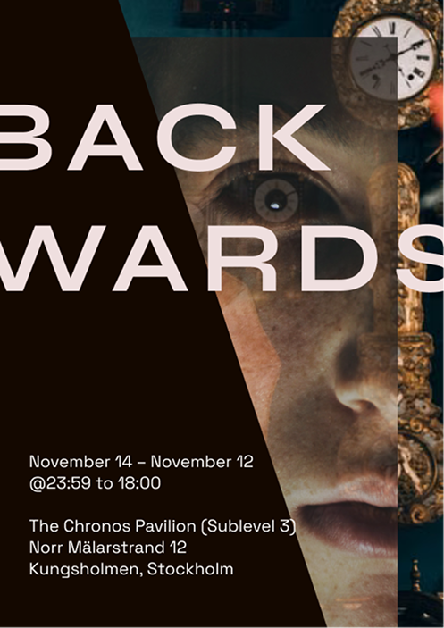

Backwards is an immersive, avant-garde multimedia art exhibition and psychological experiment that explores the illusion of linear time.
By blending surrealist physical installations, interactive light soundscapes, and warped digital art, the event challenges attendees to experience reality in reverse.
It is a space where the past is actively constructed, the future has already occurred, and human consciousness is decoupled from the ticking of the clock.

You don’t look at time; time looks out from within you.
Step through the looking glass at Backwards, a mind-bending journey into the anatomy of memory and countdowns.
Disorient your senses, unlearn your routine, and witness the precise moment where human perception merges with the gears of eternity—because the end is only the beginning.